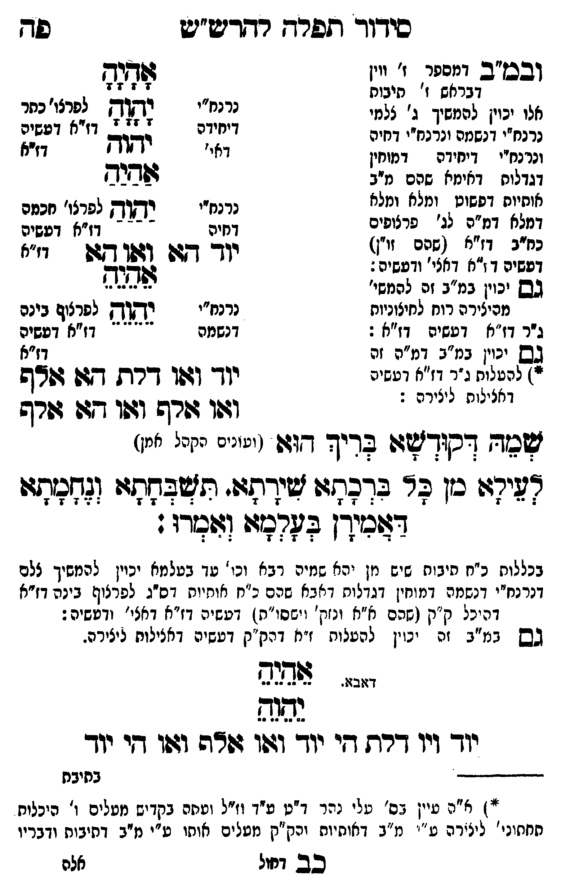

Neue Klartextfassung
[ובמ"ב דמספר ז' ווין דכללות ז' תיבות אלו יכוין להמשיך ג' צלמי נרנח"י דנשמה ונרנח"י דרוח ונרנח"י דיחידה דמוחין דגדלות דאימא שהם מ"ב אותיות דפשוט ומלא ומלא דמלא דמ"ה לג' פרצופים כחב"ד דז"א (שהם זו"ן) דעשיה דז"א דאצילות ודעשיה.] [גם יכוין במ"ב זה להמשיך מהיצירה רוח לחיצוניות ג"ר דז"א דעשיה דז"א.] [גם יכוין במ"ב דמ"ה זה להעלות ג"ר דז"א דעשיה דאצילות ליצירה.] === טבלה === [נרנח"י דיחידה; לפרצוף כתר דז"א דעשיה דז"א] אָהָיָהָ יָהָוָהָ יהוה [נרנח"י דחיה; לפרצוף חכמה דז"א דעשיה דז"א] אַהַיַהַ יַהַוַהַ יוד הא ואו הא [נרנח"י דנשמה; לפרצוף בינה דז"א דעשיה דז"א] אֵהֵיֵהֵ יֵהֵוֵהֵ יוד ואו דלת הא אלף ואו אלף ואו הא אלף === סוף טבלה === שמה דקודשא בריך הוא (ועונים הקהל אמן) לעילא מן כל ברכתא שירתא תשבחתא ונחמתא דאמירן בעלמא ואמרו: [בכללות כ"ח תיבות שהם מן יהא שמיה רבא כו' עד בעלמא יכוין להמשיך ל"ם דנרנח"י דנשמה דמוחין דגדלות דאבא שהם כ"ח אותיות דס"ג לפרצוף בינה דז"א דהיכל ק"ק (שהם חו"ב ונוק' וישסו"ת) דעשיה דז"א דאצילות ודעשיה.] [גם במ"ב זה יכוין להעלות ז"א דק"ק דעשיה דאצילות ליצירה.] אֵהֵיֵהֵ יֵהֵוֵהֵ [דאבא.] יוד ויו דלת הי יוד ואו אלף ואו הי יוד — הג"ה בתחתית העמוד — ח"ק עיין בס' עלי נהר דף ט"ו ע"ל ומשם נלמדים מעלים ו' היכלות מחיצוני' ליצירה ע"י מ"ב דחיות וק"ק מעלים אותו ע"י מ"ב דשמות והבן. [?] הנה סתומים וחתומים הם וכבר פנימיות ק"ק עלה ליצירה לנה"י שלה במדרגות חו"ב סת"ר מלכים לחב"ד מג' דיצירה העומד בעשיה דנתח כח כו' ולא [?] דהיינו לך מ"ן כחב"ד סת"ר מ"ם הם מכח הקדיש שעולה כל פנימיות עשיה ובריאה להם שעולים פנימיות על ספיחא כנודע לך כח החיצוניות לא עלה רק מה שהיה קודם הקדיש לבד ובחיצוניות הקדיש הוא סוד העמוד שבכל עולם וד"ק וע"י שעולה דרך העמוד הללו תרי חיים רק הנשמות דרך העמוד אע"פ וסוד הנשמות אלו שעולים הם סוד נר"ן דח"י המתלבשים בנר"ן התחתונים שכולם בכללותם עולים לח"י לכל נר"ן התחתונים חיים עולים כי הם ג"ר דעולם התחתון בז"ר דעולם שלמעלה ממנו ע"ש וע"ח. [?] — א"א מהרימ"ט נ"י הצעיר אליעזר ידיד הלוי.
Original gegen neue OCR · Niqqud für Vergleich ausgeblendet
Original
[ובמ"ב דמספר ז' ווין דכללותK174-001 ז' תיבות אלו יכוין להמשיך ג' צלמי נרנח"י דנשמה ונרנח"י דרוח ונרנח"יK174-002 דיחידה דמוחין ∅K174-003 דגדלות דאימא שהם מ"ב אותיותK174-004 דפשוט ומלא ומלא ∅K174-005 דמלא דמ"ה לג' פרצופים כחב"דK174-006 דז"א (שהם זו"ן) דעשיה דז"א דאצילות ודעשיה.] [גםK174-007 יכוין במ"ב זה להמשיךK174-008 מהיצירה רוח לחיצוניות ∅K174-009 ג"ר דז"א דעשיה דז"א.] [גםK174-010 יכוין במ"ב דמ"ה זה להעלותK174-011 ג"ר דז"א דעשיהK174-012 דאצילות ליצירה.] === טבלה === [נרנח"י דיחידה; לפרצוף כתר דז"א דעשיה דז"א] אהיה יהוה יהוה [נרנח"י דחיה; לפרצוף חכמה דז"א דעשיה דז"א] אהיה יהוה יוד הא ואו הא [נרנח"י דנשמה; לפרצוף בינה דז"א דעשיה דז"א] אהיה יהוה יוד ואו דלת הא אלף ואו אלף ואו הא אלף === סוף טבלה === שמה דקודשא בריך הוא (ועונים הקהל אמן) לעילא מן כל ברכתא שירתא תשבחתא ונחמתא דאמירן בעלמא ואמרו: [בכללותK174-013 כ"ח תיבות שהם מןK174-014 יהא שמיה רבא כו' עד בעלמאK174-015 יכוין להמשיך ל"םK174-016 דנרנח"י דנשמה דמוחין דגדלות דאבא שהם כ"ח אותיותK174-017 דס"ג לפרצוף בינהK174-018 דז"א דהיכל ק"קK174-019 (שהם חו"ב ונוק' וישסו"ת)K174-020 דעשיה דז"א דאצילות ודעשיה.] [גם במ"ב זה יכוין להעלותK174-021 ז"א דק"קK174-022 דעשיה דאצילות ליצירה.] אהיה יהוה [דאבא.]K174-023 יוד ויו דלת היK174-024 יוד ואו אלף ואו היK174-025 יוד — הג"ה בתחתית העמוד — ח"קK174-026 עיין בס' עלי נהר דף ט"ו ע"ל ומשם נלמדים מעליםK174-027 ו' היכלות מחיצוני'K174-028 ליצירה ע"יK174-029 מ"ב דחיות וק"ק מעליםK174-030 אותו ע"י מ"ב דשמות והבן. הנה סתומים וחתומים הם וכבר פנימיות ק"ק עלה ליצירה לנה"י שלה במדרגות חו"ב סת"ר מלכים לחב"ד מג' דיצירה העומד בעשיה דנתח כח כו' ולא דהיינו לך מ"ן כחב"ד סת"ר מ"ם הם מכח הקדיש שעולה כל פנימיות עשיה ובריאה להם שעולים פנימיות על ספיחא כנודע לך כח החיצוניות לא עלה רק מה שהיה קודם הקדיש לבד ובחיצוניות הקדיש הוא סוד העמוד שבכל עולם וד"ק וע"י שעולה דרך העמוד הללו תרי חיים רק הנשמות דרך העמוד אע"פ וסוד הנשמות אלו שעולים הם סוד נר"ן דח"י המתלבשים בנר"ן התחתונים שכולם בכללותם עולים לח"י לכל נר"ן התחתונים חיים עולים כי הם ג"ר דעולם התחתון בז"ר דעולם שלמעלה ממנו ע"ש וע"ח. — א"א מהרימ"ט נ"י הצעיר אליעזר ידיד הלוי.K174-031
OCR · fehlbar
כידוך תפרח רדדיש"ע פד ובע"ב צאן (..( נלאא דבראשK174-001 ז' תיבות אלו יכוין להמשיך ג' צלמי נרנח"י לללא לפרצו' כחר נרנח"י זנשמה ונדנח" דחיה וג(כ גיבן ו"ז ולצל "י וקו ו דאי' ותוךץ דזיא ונחזיK174-002 דיחידה דמוחין .K174-003 דגדלות דאימא שהם מ"ב שבבש אוחיוסK174-004 דפשוט ומלא ומלא רנחיי ד לפדלן'K174-005 דמלא דמ"ה לג' פרצופים צ] נשו זי [צ אלא כח"בK174-006 דז"א (שהם זו"ן) 36 שז יל].] י "א דטשיה ד ז"א דאצי' ודעשיה: וד 4: לל[ שז זז [אב]K174-007 יכוין במ"ב זה להמשי' צז..ז-.: 6K174-008 מהיצירה רוח לחיצוניות נרנח"י יקא לפרצוף בינהK174-009 ג"ר דז"א דעשיה דז"א : דנשמה ' ' ' ' דז"א דעשיה בשK174-010 יכוין במ"ב דמ"ה זה גז"א י) להטלותK174-011 ג"ר דז"א דטשיה וד' 11 דרת -זן דףK174-012 דאצילות ליצירה : ודו שר9 וזהו 27 שרש שנד דסוךזל:: עריך דווו (ינינימ נחני "מ) זי בן ער בדננץ ידידנו. תישבגיזי (גדניתו: דצכיךן בדרחלז: (זוברו: בכללותK174-013 כ"ח תיבוח שיש מזןK174-014 יהא שמיה רבא וכו' טד בטלמאK174-015 יכוין להמשיך צלםK174-016 דנרנח"י דנשמה דמוחין דגדלות דאבא שהם ב"ח אותיוחK174-017 דס"ג לפרצוף ביניהK174-018 דז"א דה יכל ק"ןK174-019 (שהם א"א ונזק' וישסו"ח.)K174-020 דעשיה דז"א דאצי' ודששיה: גבש גמ"ג זח ינ.ין להטנותK174-021 ז"א דמק"קK174-022 דעשיה דאצילות ניצירה. ינ. צזתנ נדגשK174-023 יוד ויו דרת דיK174-024 יוד וג:ו וודה ושו דיK174-025 יוד ללללללללל בחיבת "' א"הK174-026 עיין בס' עלי נהר ד"ט ע"ד וז"ל וטחה בקדיש מטליםK174-027 ו' היכלות החחוני'K174-028 ליצירה ט "'K174-029 מ"ב דאותיות והק"ק מטליםK174-030 אותו ע"י מ"ב דתיבות ודבריו בב דחול אלהK174-031